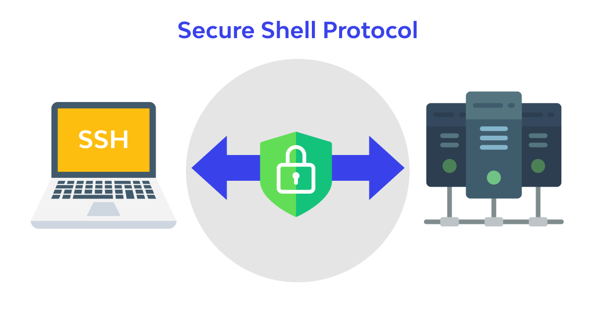
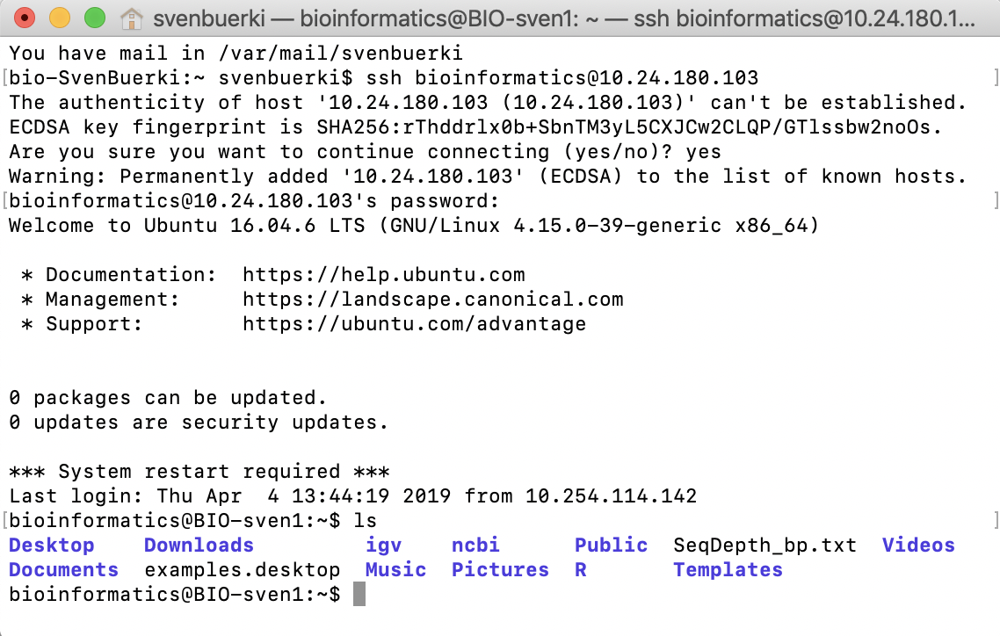
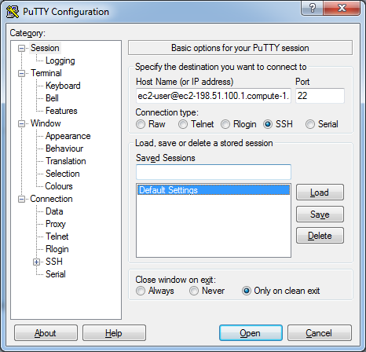

Remote Computing and Bash Tutorials
Bioinformatics Toolkit for Genomics Analyses
2026-03-12
1 Introduction
This webpage provides tutorials introducing remote computing and command-line tools commonly used in genomics and bioinformatics. The tutorials focus on practical workflows using Linux computers running the Ubuntu distribution.
The material presented here is especially relevant for:
These tutorials will help you develop the computational skills required to connect to remote computers, manage long analyses, and navigate the command-line environment used in genomics research.
2 Learning Outcomes
After completing these tutorials, you will be able to:
- Remotely access Linux computers using the
sshprotocol. - Safely run long analyses (aka computer jobs) using
tmuxsessions. - Use common Bash command-line tools to organize files and perform genomics analyses.
3 Structure
These tutorials are organized to guide you through the essential steps required to work on remote Linux computers and conduct genomics analyses using the command line.
The material is structured into the following sections:
Remotely access Linux computers:
In this section, you will learn how to connect to remote computers using thesshprotocol and understand the basic concepts required for secure remote access.Safely run computer jobs:
This section introduces thetmuxtool, which allows you to run and manage long computational jobs in persistent terminal sessions.Bash command-line reference:
This section provides a practical overview of commonly used Bash commands to navigate the file system, manage files, and support genomics analyses.
4 Your Computer Accounts
Details on your Linux computer accounts and their IP addresses are summarized in this Google document.
Your assigned user IDs for each group are provided in this spreadsheet.
5 Remotely Access Computers
To remotely access your assigned Linux computer accounts using the ssh protocol, you need the following information:
- Your user ID and password (see the Google document).
- The IP address of the computer you want to connect to.
If you want to remotely access the lab computers from a Windows machine, please read the protocol described below before continuing.
Important: If you are accessing the Linux computers outside of the BSU campus network, you will need to connect through the BSU VPN.
5.1 What is an IP Address?
An Internet Protocol (IP) address is a numerical label assigned to each device connected to a computer network that uses the Internet Protocol for communication.
An IP address serves two main functions:
- Network interface identification
- Location addressing
5.2 How to Find the IP Address?
The procedure summarized here shows how to retrieve a computer’s IP address on the Ubuntu operating system (Figure (ref?)(fig:IP)):
- Open the
System Settingsapplication from the desktop sidebar. - Select the
Networktab located under the Hardware section. - Select the
Wiredtab. - The computer’s IP address appears under the IPv4 Address field.

Figure 5.1: Screenshot of Ubuntu desktop showing how to retrieve the IP address.
5.2.1 Command Lines to Get the IP Address
You can also retrieve the IP address from the command line by typing the following commands in a Terminal:
# Get IP address
hostname -I | awk '{print $1}'
ip a
ifconfig -a5.3 The ssh Protocol
The Secure Shell (ssh) protocol is a method used for secure remote login from one computer to another (Figure (ref?)(fig:sshFig)).
It protects communication using strong encryption and allows users to remotely execute commands on another machine.

Figure 5.2: Overview of ssh protocol.
Once you have gathered the required information (IP address and username), open a Terminal and type:
# General command
ssh USER_ID@IP
# Example
ssh bioinformatics@132.178.143.53
Figure 5.3: Example of an ssh connection from a Terminal.
5.4 Install Putty on Windows
If you are using Windows, you can use Putty to establish SSH connections.
Download the software here: http://www.putty.org
When launching Putty:
- Enter
user@IPin the Host Name field. - Set Port to
22. - Select SSH as the connection type.

Figure 5.4: Putty configuration window.
5.5 Exercises
- Retrieve your user ID and IP address.
- Connect to your account using
ssh. - Exit the remote session using
exit.
6 Safely Run Computer Jobs
Some analyses performed in genomics can take several hours or even days to complete. To avoid interrupting these analyses, it is important to run them in a persistent terminal environment.
The tool we will use for this purpose is tmux, which allows multiple terminal sessions to run simultaneously.
6.1 The tmux protocol
tmux is a terminal multiplexer for Unix-like systems.
It allows users to create multiple independent terminal sessions within a single window.
Key advantages:
- Run long analyses safely
- Disconnect from a remote computer without stopping jobs
- Manage multiple command-line tasks simultaneously
6.1.1 Install tmux on Mac
brew install tmux6.2 How to Operate tmux Sessions
6.2.1 Create a New Session
tmux6.2.2 Detach from a Session
Press:
Ctrl+b then d6.2.3 Reattach to a Session
tmux attach6.2.4 Create and Name a Session
tmux new -s JOB16.2.5 List Sessions
tmux list-sessions6.2.6 Attach to a Specific Session
tmux attach -t JOB16.2.7 Kill a Session
tmux kill-session -t JOB1Warning: Killing a session will terminate any running analysis.
7 Bash Command-Line Reference
Below is a collection of common Bash commands used to navigate the file system and manage computational analyses.
7.1 File System
ls— list files in a directory
cd— change directory
pwd— print working directory
mkdir— create a directory
rm— remove a file
cp— copy files
mv— move or rename files
cat— display file contents
less— view files page by page
head— show the first lines of a file
tail— show the last lines of a file
7.2 System
whoami— display current userdate— display date and timeexit— exit terminaldf -h— disk usagefree— memory usage
7.3 Process Management
ps— list active processestop— show running processeshtop— interactive process viewerkill PID— terminate process
7.4 Networking
ssh user@host— connect to remote hostscp— transfer files between machineswget— download filescurl— download files
7.5 Searching
grep— search text patternsfind— locate filessed— text substitution
7.6 Compression
tar— archive filesgzip— compress files
8 Exercises
To practice the skills introduced in this tutorial:
- Connect to your account using
ssh. - List the contents of your home directory using
ls. - Navigate to
Documents/usingcd. - Create a directory named
My_jobs. - Enter the directory.
- Create a file named
README.txtusingvim. - Add the text Hello! to the file.
- Verify the file exists using
ls -alh. - Delete the file using
rm. - Remove the directory using
rm -r. - Exit your remote session using
exit.